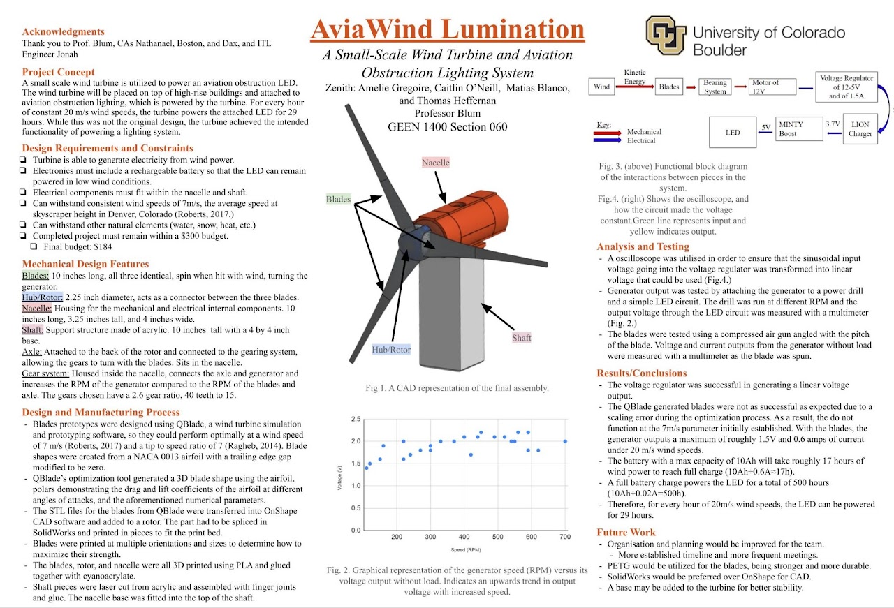
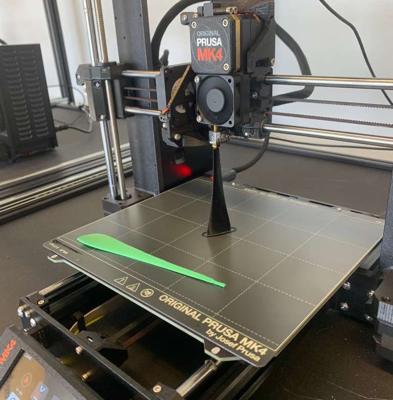
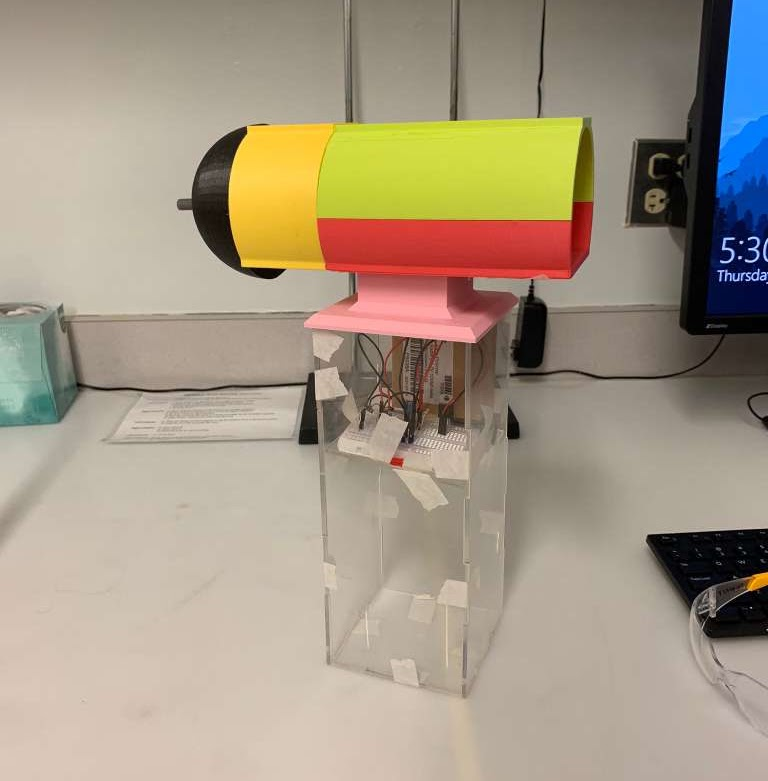
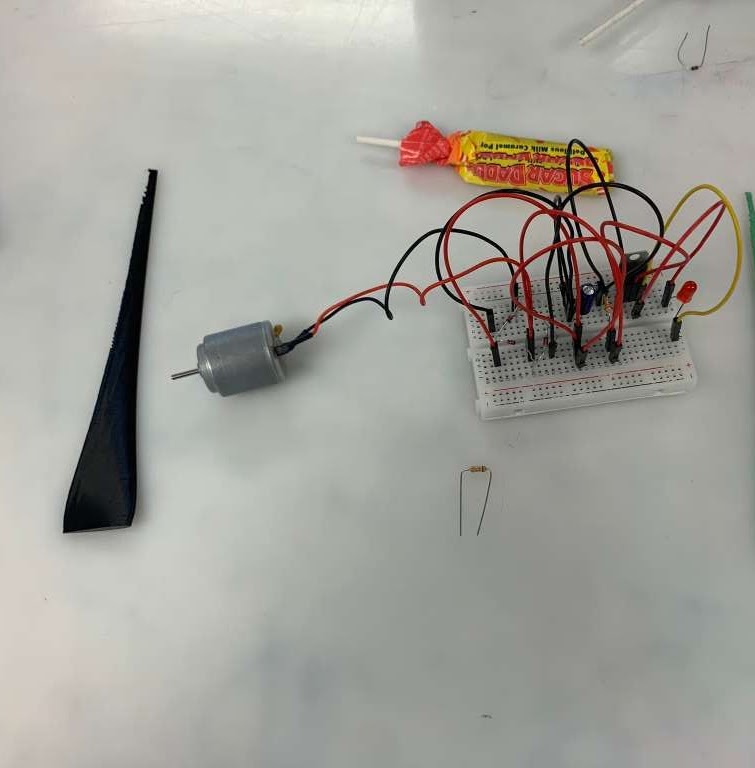
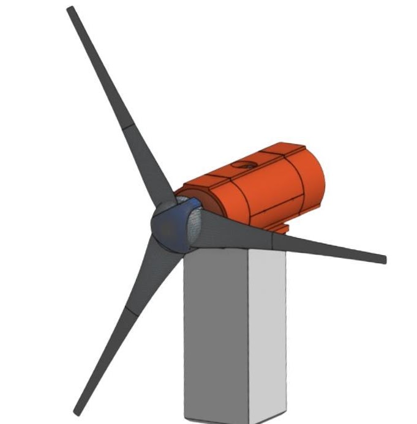

AviaWind Lumination
With a team of four, I helped design and build a compact wind turbine engineered for a very specific job: powering the aviation obstruction lights that sit on top of high-rise buildings.
The Project
This was a genuinely meaningful project to work on. We set out to build a small, purpose-built turbine that could keep those red rooftop warning lights lit using nothing but wind. I took on leadership responsibilities throughout, facilitating communication and project planning to keep the team collaborating smoothly and hitting our milestones.
My Technical Contributions
On the engineering side, I designed the turbine's nacelle and blades in Onshape, optimizing them for both performance and manufacturability. I also played a key role in the electronics, designing circuitry that let the turbine efficiently convert kinetic energy into usable electricity. Along the way I got hands-on with prototyping and fabrication techniques including 3D printing, laser cutting, and machining to build and test working prototypes.
What I'd Improve
Most of our areas for improvement came down to communication. As freshmen tackling a class project, we mostly met during class and only occasionally outside of it. More frequent meetings beyond class time would have helped us generate ideas faster, tighten up our prototypes and deliverables, and manage tasks more effectively.
Gallery




